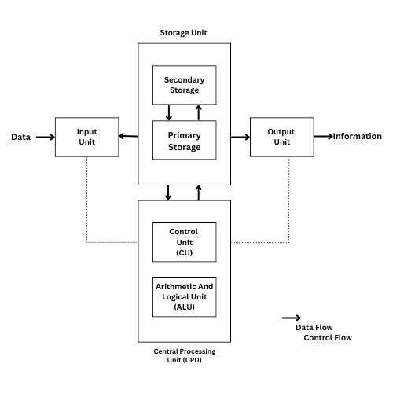

Introdution to Computers
1.Introduction:
What is Computer?
- An electronic device or machine.
- Works under stored instructions (programs).
- Capable:
- Input - Accepting data.
- Processing - Manipulating data acording to rules.
- Output - Producing information
- Storage - Saving data/results for future use.
Computer System Components
- Hardware
- The physical parts of a computer(monitr, keyboard, CPU, etc.).
- Tangible - you can see and touch them.
- Software
- A set of programs, instructions, and procedures that tell hardware what to do.
- Includes:
- System Software - Opearating systems, utilities.
- Application Software - Programs for specific tasks (e.g., MS Word).
2. Characteristics of Computers:
- Speed:
- Works much faster than humans.
- Can execute millions on instructons per second.
- Accuracy:
- Very accurate if instructions are correct.
- Errors only happens if input/instructions are wrong.
- Automation:
- Once started, performs takes automatically without further help.
- Versatility:
- Can do different types of work (calculations, games, music, etc.).
- Diligence:
- Never gets tired or bored.
- Can repeat taks continuously with the same efficiency.
- Efficiency:
- Works on repeated tasks without losing speed or quality.
- Storage Capability:
- Stores huge amounts of data in a small space (hard disks, CDs, pen drives).
3. Basic Block Diagram of Computer

A computer works through Input → Processing → Storage → Output.
It has four main units.:
- Input Unit
- Accepts data and instructions.
- Converts them into a form the computer can process.
- Examples:
- Keyboard
- Mouse
- Scanner
- Microphone
- Digital camera
- Processing Unit (CPU) - The "Brain" of the Computer
- Control Unit (CU)
- Directs all operations inside the computer.
- Manages the flow of data between units.
- Arithmetic & Logic Unit (ALU)
- Performs calculations (addition, subtraction, etc.).
- Handles logical decisions (comparing values, conditions).